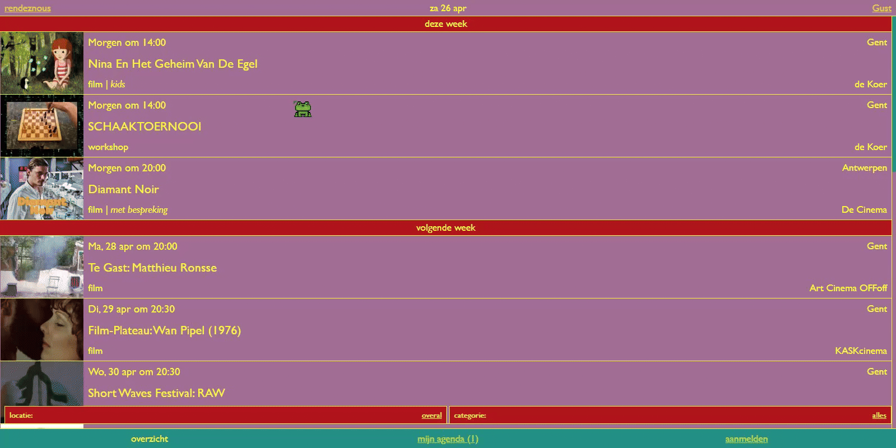

Rendeznous.be is een webapplicatie die een alternatief wil bieden voor sociale mediaplatformen bij het ontdekken en organiseren van evenementen. Deze prikkelarme tool wil een stap zetten richting een meer ethisch en onafhankelijk internet.